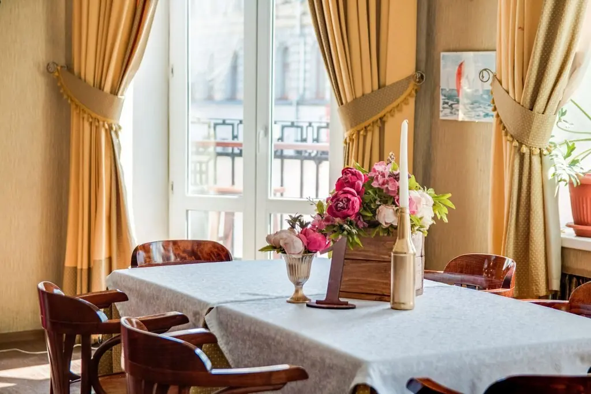
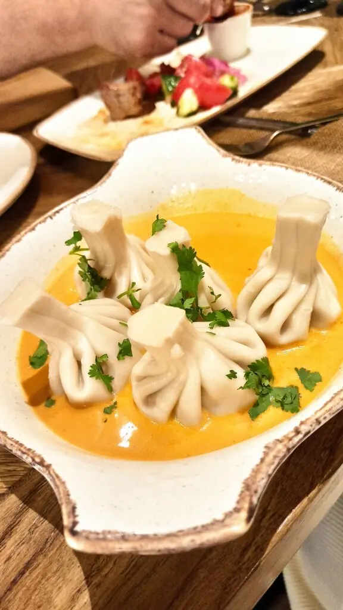
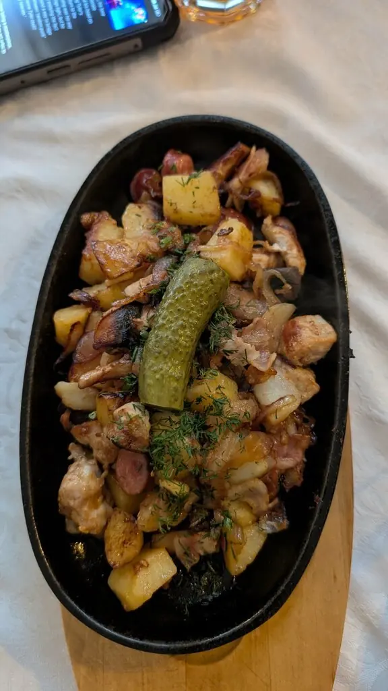
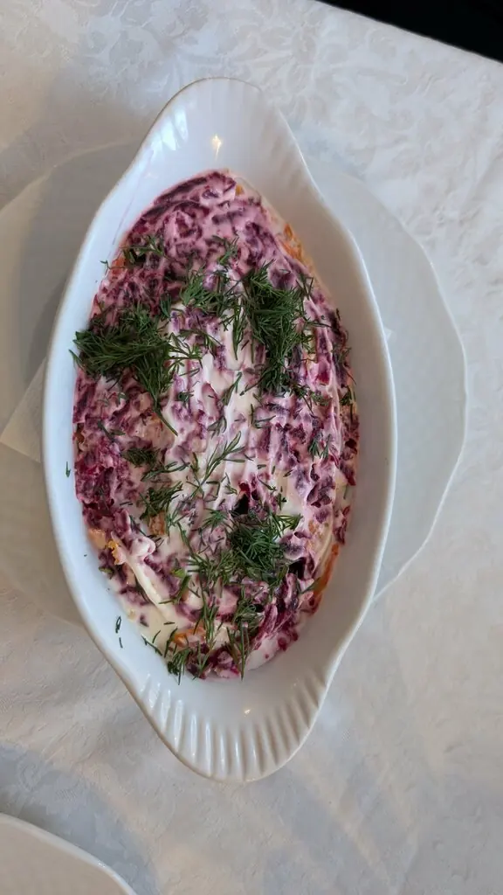
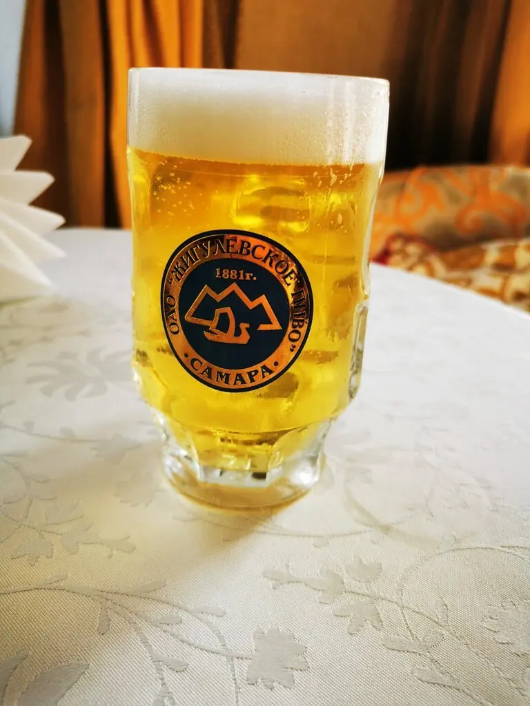

КипятокЪ
Ведомости русской кухни и хорошего настроения
Ленинградская улица, домъ 40Ежедневно съ 12 до 22 часовъСредний счёт 800–1500 ₽
В Самаре найдено место, где время течёт медленнее
Съ пылу, съ жару
Гости шутят, что название оправдано: еда здесь приходит настолько горячая, что можно обжечь язык. Высокие окна, старинное пианино, портьеры и винтажная мебель создают чувство гостиной купеческого дома.

Залъ на втором этаже. Столов всего семь, вечером лучше бронировать заранее.
Отзывы публики
4,8
по 851 оценке на картахСтол на вечеръ?
Что заказываютъБлюда, которые гости сами называют в отзывах. Полное меню с ценами добавим из вашего прайса.
Пельмени
С них гости обычно и начинают. Порции хвалят: большие, как дома.Говядина Шевалье
Одно из самых необычных блюд в меню.Утка по-дворянски
Подружится с бокалом грузинского вина.Фрикадельки щучьи
«Всё безумно вкусно», пишет гостья.Потроха фрикассе
Для тех, кто любит русскую кухню всерьёз.Мороженое «Яблоки на снегу»
Настоящее мороженое, которое запоминают отдельно.Домашние настойки
Гости советуют не уходить, не попробовав.Постное меню
Есть для тех, кто соблюдает пост.Глинтвейн и чай
Можно взять с собой на прогулку по старому городу.



Письма въ редакцию
Высокие окна, винтажная мебель, старинные детали и ощущение, будто время здесь течёт медленнее.Наталья, интерьерный фотограф
Пробовали пельмени, говядину Шевалье и потрошки. Отличная кухня, сбалансированный вкус.Катерина Маковенко
28 апреля у нас была 31-я годовщина свадьбы. Прекрасное атмосферное место, такое уютное и родное!Ната Соколова
Объявленiе
Принимаются брони столов на обеды, ужины, годовщины и небольшие банкеты до 45 персон.
Адресъ: Самара, Ленинградская улица, 40. Телефонъ: +7 846 333-27-20